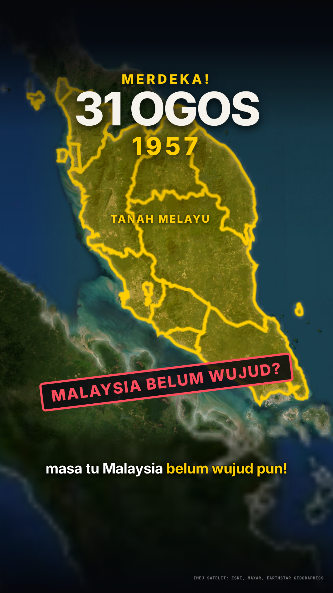
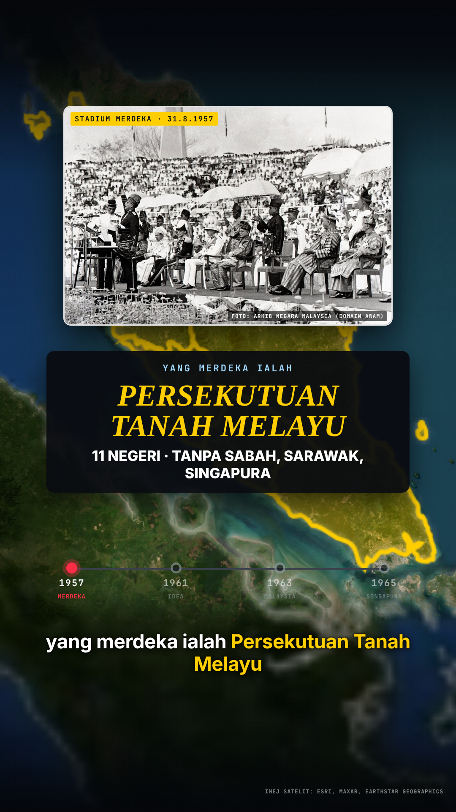
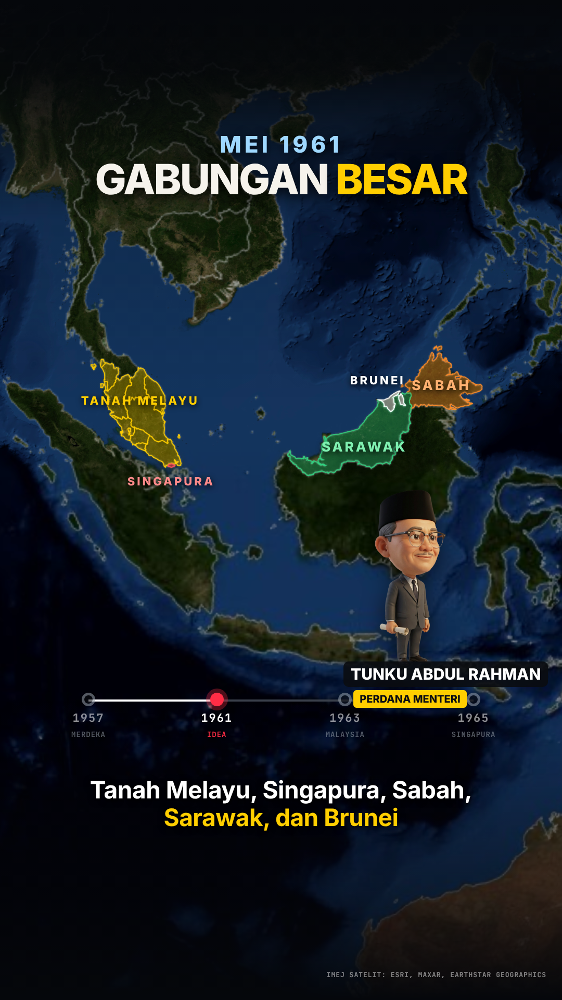
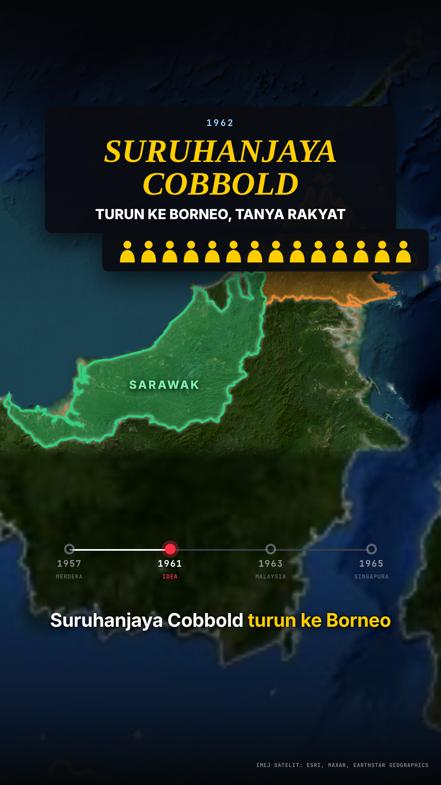
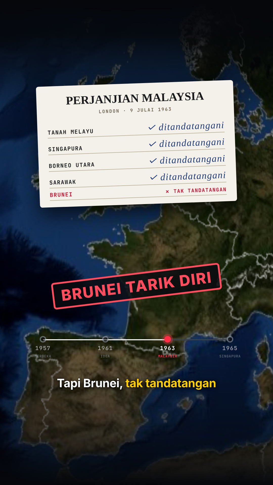
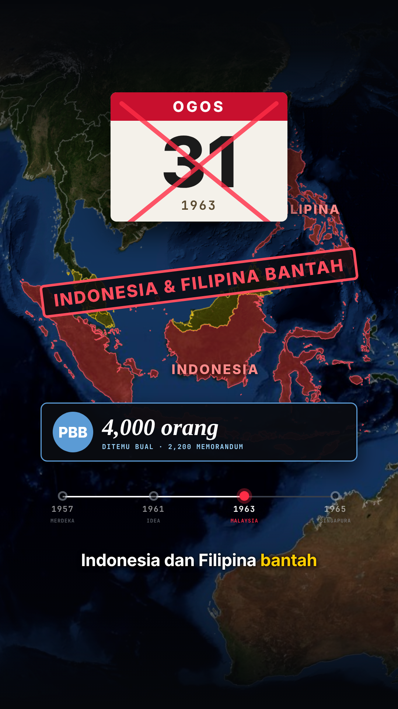
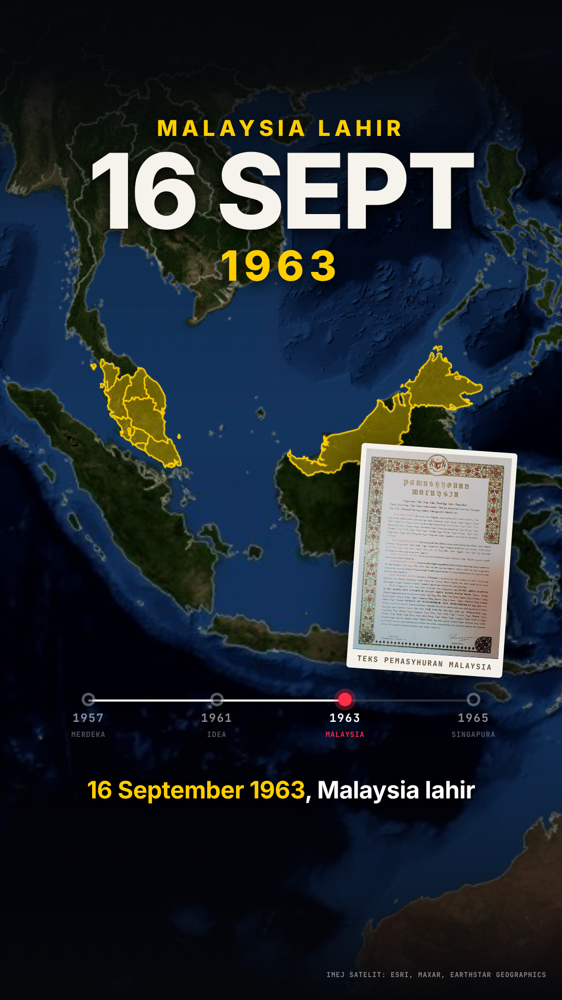
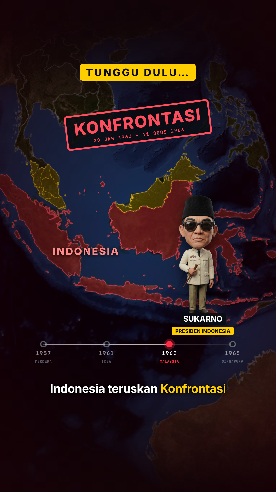
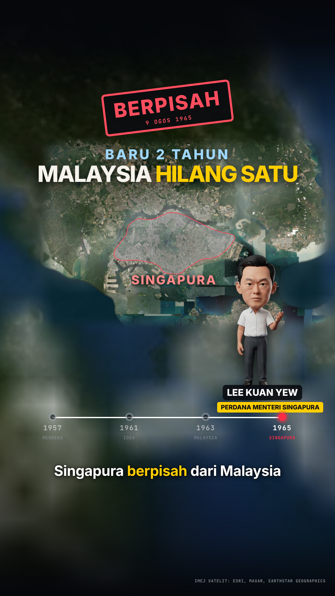
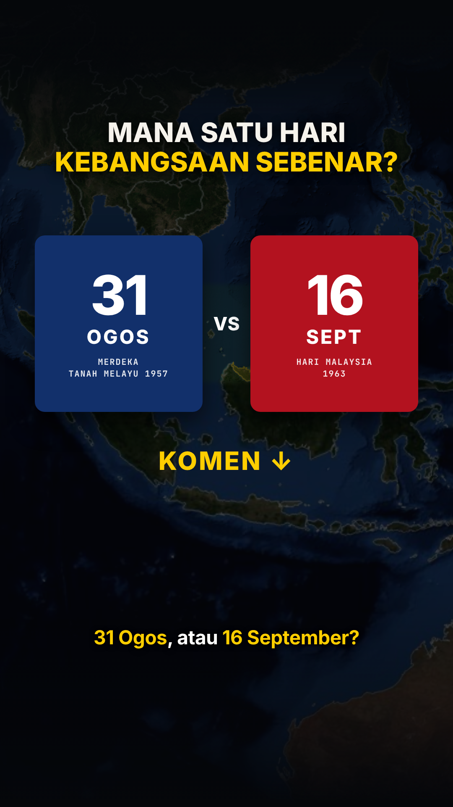

MAP ANIMATION · 1080×1920 · ≈57 s · open loop "hilang satu negeri" + re-hook Konfrontasi · karikatur Tunku, Sukarno, Lee Kuan Yew · foto: Arkib Negara (Wikimedia Commons) · fakta: Wikipedia

01 · 0:00
Hook + open loop
"Setiap tahun kita sambut Merdeka, 31 Ogos. Tapi tahu tak, masa tu Malaysia belum wujud pun! Dan dua tahun lepas lahir, ia hilang satu negeri."
Semenanjung menyala emas, tarikh besar 31 OGOS 1957, cop merah MALAYSIA BELUM WUJUD?

02 · 0:07
1957
"Tahun 1957, yang merdeka ialah Persekutuan Tanah Melayu."
Foto sebenar Stadium Merdeka 1957 (Arkib Negara, domain awam) + kad Persekutuan Tanah Melayu. Garis masa 1957.

03 · 0:11
Mei 1961: idea Tunku
"Mei 1961, Tunku Abdul Rahman umumkan idea gabungan besar: Tanah Melayu, Singapura, Sabah, Sarawak, dan Brunei."
Peta luas, 5 wilayah menyala satu-satu ikut sebutan. Karikatur Tunku jatuh masuk + melantun.

04 · 0:19
Cobbold
"Suruhanjaya Cobbold turun ke Borneo, tanya pendapat rakyat."
Zoom ke Borneo, Sarawak & Borneo Utara menyala, kad Suruhanjaya Cobbold 1962 + ikon orang muncul satu-satu.

05 · 0:23
London 1963
"9 Julai 1963, Perjanjian Malaysia ditandatangani di London. Tapi Brunei, tak tandatangan."
Terbang ke London, dokumen Perjanjian Malaysia: ✓ ditanda satu-satu, Brunei ✗ + cop BRUNEI TARIK DIRI.

06 · 0:30
31 Ogos 1963 batal
"Malaysia sepatutnya lahir 31 Ogos 1963. Tapi Indonesia dan Filipina bantah, dan PBB turun tinjau dulu."
Kalendar 31 OGOS 1963 dipangkah merah. Indonesia & Filipina jadi merah. Kad PBB: 4,000 ditemu bual.

07 · 0:37
16 Sept 1963
"Akhirnya, 16 September 1963, Malaysia lahir."
Empat wilayah menyala emas serentak, tarikh besar 16 SEPT 1963, teks Pemasyhuran Malaysia.

08 · 0:41
Re-hook: Konfrontasi
"Tapi tunggu dulu! Indonesia teruskan Konfrontasi, sampai 1966."
Flash, muzik berhenti, skrin merah. Cop KONFRONTASI 1963–1966 + karikatur Sukarno jatuh masuk.

09 · 0:46
Singapura keluar
"Dan 9 Ogos 1965, Singapura berpisah dari Malaysia."
Zoom ke Singapura, ia padam jadi kelabu. Cop BERPISAH 9 OGOS 1965, jawapan open loop. Karikatur Lee Kuan Yew jatuh masuk.

10 · 0:51
Isu komen
"Hari ni, ramai di Sabah dan Sarawak kata, 16 September lah hari kebangsaan sebenar. Kau setuju? 31 Ogos, atau 16 September? Komen kat bawah!"
Dua kad besar 31 OGOS vs 16 SEPT, gaya undian, dan KOMEN ↓.